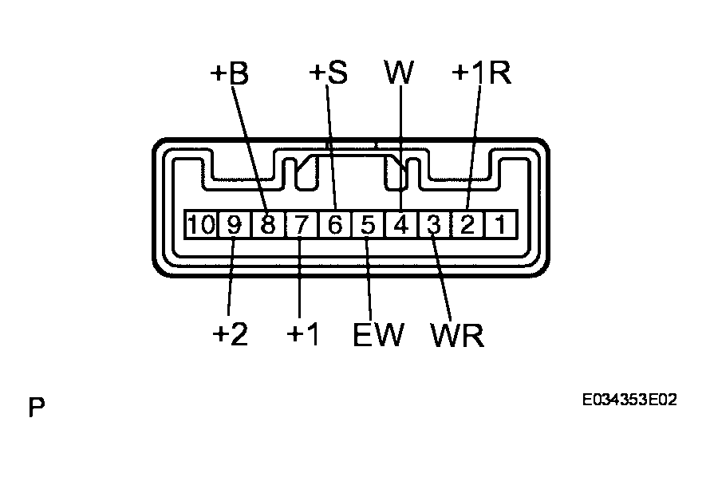

Wiper Switch: Inspection
- INSPECT WINDSHIELD WIPER SWITCH ASSEMBLY
- Measure the resistance of the switch.
Standard resistance:
Front wiper switch
TERMINALS RESISTANCE SPECIFICATION (FRONT WIPER SWITCH)Tester Connection Switch Condition Specified Condition 7 (+1) - 8 (+B) MIST Below 1 Ω 6 (+S) - 7 (+1) OFF Below 1 Ω 6 (+S) - 7 (+1) INT Below 1 Ω 7 (+1) - 8 (+B) LO Below 1 Ω 8 (+B) - 9 (+2) HI Below 1 Ω 
Courtesy of © TOYOTA, LICENSE AGREEMENT TMS1002Front washer switch
TERMINALS RESISTANCE SPECIFICATION (FRONT WASHER SWITCH)Tester Connection Switch Condition Specified Condition 4 (W) - 5 (EW) OFF 10 kΩ or higher 4 (W) - 5 (EW) ON Below 1 Ω Rear wiper switch
TERMINALS RESISTANCE SPECIFICATION (REAR WIPER SWITCH)Tester Connection Switch Condition Specified Condition 3 (WR) - 5 (EW) WASH 1 Below 1 Ω 2 (+1R) - 3 (WR) - 5 (EW) OFF 10 kΩ or higher 2 (+1R) - 5 (EW) ON Below 1 Ω 3 (WR) - 2 (+1R) - 5 (EW) WASH 2 Below 1 Ω If the result is not as specified, replace the switch assembly.
- Check the intermittent operation
- Connect the voltmeter's positive (+) lead to terminal 7 (+1) and the voltmeter's negative (-) lead to terminal to terminal 5 (EW).
- Connect the battery's positive (+) lead to terminal 8 (+B) and the battery's negative (-) lead to terminals 5 (EW) and 6 (+S).
- Turn the wiper switch to the INT position.
- Connect the battery's positive (+) lead to terminal 6 (+S) for 5 seconds.
- Connect the battery's negative (-) lead to terminal 6 (+S). Operate the intermittent wiper relay and check the voltage between terminals 7 (+1) and 5 (EW).
OK:
Refer to illustration.
If the result is not as specified, replace the switch assembly.
- Check the front washer operation.
- Turn the wiper switch off.
- Connect the battery's positive (+) lead to terminal 8 (+B) and the battery's negative (-) lead to terminal 6 (+S) and 5 (EW).
- Connect the voltmeter's positive (+) lead to terminal 7 (+1) and the voltmeter's negative (-) lead to terminal 5 (EW).
- Turn the washer switch on and off, and check voltage between terminal 7 (+1) and 5 (EW).
If the result is not as specified, replace the switch assembly.
OK:
Refer to illustration.
- Measure the resistance of the switch.